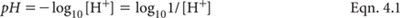
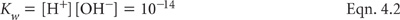
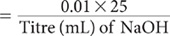
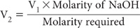
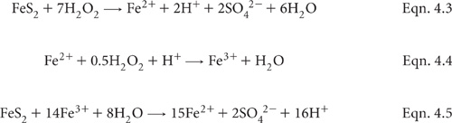

The pH value of soil is a numerical expression of the intensity of acidity (or alkalinity) that in turn influences soil conditions and plant growth. The effects include changes in the solubility and activity of various biologically important elements and processes.
As with most measurements on soil, pH values vary with the procedure used. For example, pH is affected by the soil/solution ratio and by the composition and temperature of the equilibrating solution. In general, pH values increase as the ratio of soil/solution widens. Also, pH values of most soils are lower when determined in a salt solution rather than at the same soil/solution ratio in 1:5 soil/water (pHw). Differences are commonly in the vicinity of 0.5 to 1.0 pH unit but inter-relationships vary with soil type and often are polynomial (Aitken and Moody 1991; Little 1992) rather than linear (Conyers and Davey 1988; Bruce et al. 1989). In highly weathered soils, the differences between pH values measured in salt solutions and in water extracts can be insignificant or even reversed. Ultimately, the laboratory measurement of soil pH, irrespective of the procedure, reflects the average of a range of effects at microscopic scale, including soil ionic strength, soil composition and biological activity.
For large numbers of Queensland surface soils, pH in a 1:5 soil/water extract of ≈5.0–5.4 is equivalent to pH in a 1:5 soil/0.01 M CaCl2 extract of ≈4.6. At pH 4.0 for a 1:5 soil/water extract, the corresponding pH of a 1:5 soil/0.01 M CaCl2 extract is ≈3.5 (Ahern et al. 1995), although there are many exceptions, particularly in highly weathered and organic soils with variable surface charge characteristics.
The addition of soluble fertilisers to non-saline soils may result in an apparent lowering of soil pH when measured in water extracts but the presence of soluble fertilisers usually has little effect on the apparent pH, when measured in a salt solution such as 0.01 M CaCl2. These effects are observed without any addition of H+ to the system. Preferred pHw levels in surface soils (0-10 cm) range from 6.0–8.0, although good growth of many plant species is possible over a wide range of pH values, in the absence of nutrient deficiencies or toxicities. Ratings for soil pH values are given in Table 4.1.
Table 4.1. Ratings for soÕ pH (adapted from Bruce and Rayment 1982 and USDA-NRCS 2004).
Rating |
pH range |
Rating |
pH range |
Ultra acid Extremely acid Very strongly acid Strongly acid Moderately acid Slightly acid |
1.8–3.4 3.5–4.4 4.5–5.0 5.1–5.5 5.6–6.0 6.1–6.5 |
Neutral Slightly or mildly alkaline Moderately alkaline Strongly alkaline Very strongly alkaline Ultra alkaline |
6.6–7.3 7.4–7.8 7.9–8.4 8.5–9.0 9.0–10 >10 |
Table 4.2. H+ and OH– Šns in aqueous solutŠn at different values of pH.
pH |
Rating |
H+ mol/L |
OH– mol/L |
0 |
Maximum acidity |
1 |
1 × 10–14 |
1 |
|
1 × 10–1 |
1 × 10–13 |
2 |
|
1 × 10–2 |
1 × 10–12 |
3 |
|
1 × 10–3 |
1 × 10–11 |
4 |
|
1 × 10–4 |
1 × 10–10 |
5 |
|
1 × 10–5 |
1 × 10–9 |
6 |
|
1 × 10–6 |
1 × 10–8 |
7 |
Neutral |
1 × 10–7 |
1 × 10–7 |
8 |
|
1 × 10–8 |
1 × 10–6 |
9 |
|
1 × 10–9 |
1 × 10–5 |
10 |
|
1 × 10–10 |
1 × 10–4 |
11 |
|
1 × 10–11 |
1 × 10–3 |
12 |
|
1 × 10–12 |
1 × 10–2 |
13 |
|
1 × 10–13 |
1 × 10–1 |
14 |
Maximum alkalinity |
1 × 10–14 |
1 |
Generally, pHw values ≤4 are indicative of sulfides (Isbell 1998, Thomas 1967; Chapter 20, this volume), while levels ranging from around 8.5–9.5 are indicative of significant quantities of exchangeable Na (Thomas 1967). Soils or sediments with pH values >10 suggest the presence of free OH–, probably associated with the industrial use of caustic soda (NaOH).
Nutrient availability tends to optimise in the pH range 6–7, while soils that are strongly to very strongly acidic typically enhance the solubilities of Al, Fe and B, and restrict the solubility of plant available Mo. At elevated pH levels (moderately to very strongly alkaline), the plant availability of nutrients such as P, B, Zn, Mn, Fe and possibly Cu may be restricted. In contrast, Mo availability is enhanced.
Measurement of pH traditionally involves detection of the change in potential of a glass-calomel electrode array (separate electrodes or in combination), nowadays using a pH or millivolt meter, standardised against buffer solutions of known pH. As values for these buffers vary with temperature (Bates 1962; Alvarez 1984), it is recommended that automated temperature compensation be activated, if included as a feature of the pH meter. Soil pH can also be ‘predicted’ by a surrogate relationship established between MIR and conventional pH measurements of relevant soils.
Theoretically, pH is the negative logarithm of the H+ activity [H+], as shown in Equation 4.1.

It follows that the pH scale is logarithmic, indicating a unit change in pH is equivalent to a ten-fold increase or decrease in the activity of H+ or OH–. The relationship between the activities of H+ and OH– is based on the disassociation constant of pure water (Kw; Equation 4.2), with examples provided in Table 4.2. In routine measurements of soil pH, it is standard practice to ignore effects on H+ activities due to varying ionic species and solution ionic strengths.

When there is a need to calculate the average or median pH value (or the like) from a collection of results, the measured pH values should first be converted into –log [H+] before applying the relevant mathematics. That answer must then be transformed back to pH units (antilog). For example, the average (± std.dev.) of pH values 4.0, 4.5, 5.5, 7.0, 8.3 and 8.8 might appear to be 6.35 ± 1.99 but is actually 4.65 ± 4.40. This approach should be applied to results from all pH methods.
Preambles to individual pH methods in this chapter (see Table 4.3 for summary details) provide brief details of the chemistries involved. The increasing use of automated pH ‘robots’ (Grigg et al. 1980; see Figure 4.1 for an example) is recognised by covering pH measurement with or without stirring at the time of measurement. The allocation of different method codes to cover these options reflects the fact that measurement conditions may sometimes slightly affect apparent pH results.
Apart from the method involving oxidation with H2O2, which is best performed on field-moist soil, other laboratory methods use air-dry soil of <2 mm particle size, apart from the method based on MIR. The MIR method uses air-dry soil with a particle size of <0.5 mm.
No correction for water content is made when reporting pH results, and possible specific ion effects on response of the glass electrode are assumed to be insignificant. See Method 14C1 for the determination of pH in saturation extracts and Method 20B1 for pH measurements in known ASS. International standard ISO 10390 (ISO-pH 2005) covers soil pH measured in water, 0.01 M calcium chloride and in 1.0 M potassium chloride but its specification of equilibration at 20°C makes it inappropriate for use in laboratories located in the tropics and sub-tropics, including many Australian laboratories, where laboratory temperatures of ≈23–25°C are common.
Figure 4.1. Example of an automated soil pH analyser operating in a working laboratory.
Table 4.3. Summary detaÕs of method codes, method titles, technologies and expected reliabÕity of laboratory and field tests described in this chapter.
Code |
Technology |
Test method |
Notes |
4A1 |
Glass-calomel electrodes and millivolt meter. |
pH of 1:5 soil/water suspension. |
Reliable and quick laboratory method, but results affected by presence of soluble salts. |
4A2 |
|
pH of 1:1 soil/water suspension. |
Variants of 4A1. |
4A3 |
|
pH of 1:2.5 soil/water suspension. |
|
4B1 |
|
pH of 1:5 soil/0.01 M CaCl2 extract – direct (without stirring during measurement). |
Reliable and quick laboratory method. Results largely unaffected by presence of soluble salts. |
4B2 |
|
pH of 1:5 soil/0.01 M CaCl2 extract – following method 4A1 (without stirring during measurement). |
Slight variants of 4B1, insufficient to significantly affect final pH results. |
4B3 |
|
pH of 1:5 soil/0.01 M CaCl2 extract – direct (with stirring during measurement). |
|
4B4 |
|
pH of 1:5 soil/0.01 M CaCl2 extract – following method 4A1 (with stirring during measurement). |
|
4B5 |
MIR diffuse reflectance spectroscopy. |
pH of 1:5 soil/0.01 M CaCl2 extract equivalent, by MIR reflectance spectroscopy. |
Approx. surrogate of 4B1, by correlation. |
4C1 |
Glass-calomel electrodes and millivolt meter. |
pH of 1:5 soil/1 M KCl extract – direct (without stirring during measurement). |
Reliable and quick laboratory method. Results largely unaffected by presence of soluble salts. |
4C2 |
|
pH of 1:5 soil/1 M KCl extract – following method 4A1 (without stirring during measurement). |
Slight variants of 4C1, insufficient to significantly affect final pH results. |
4C3 |
|
pH of 1:5 soil/1 M KCl extract – direct (with stirring during measurement). |
|
4C4 |
|
pH of 1:5 soil/1 M KCl extract – following method 4A1 (with stirring during measurement). |
|
4D1 |
|
pH of NaF suspension and ‘reactivity class’. |
Useful laboratory indicator of presence of reactive hydroxyl Al groups |
4E1 |
|
pH of H2O2 extract. |
Useful laboratory indicator of presence of oxidisable sulfide ions |
4F1 |
Calculation. |
Δ pH. |
Quick, cheap indicator of variable-charge characteristics of the soil. |
4G1 |
pH indicator – wet chemistry. |
Field determination of pH. |
Affected by quality of reagents and operator skill. |
Figure 4.2. The effects of soil pH values on % robust CVs derived from ASPAC soil inter-laboratory proficiency programs from 1997–2007. The trends are not significant.
Raupach (1954) examined errors associated with the laboratory measurement of pH in 1:5 soil/water suspensions. For example, the absence of equilibrium may give differences as high as 1.0 pH unit when measurements are made upon sedimenting alkaline suspensions. He reported no measurable errors due to this cause below pH 5. Neither did the presence of soluble salts modify the differences observed.
Ducksbury and Telford (1972) have reviewed the high precision measurement of pH. They reported industrial laboratories, using standard procedures, can generally make pH determinations with a precision of ±0.03 to ±0.08 pH units, with a few caveats. Soil pH measurements, however, mostly need no greater accuracy than ±0.1 unit and, quite often, circumstances do not justify this precision (Raupach 1954). This is supported by ISO-pH (2005) and by many years of interlaboratory soil proficiency testing by ASPAC (Rayment 2005). Figure 4.2 shows that robust coefficients of variation (%) are independent of reported pH values by two common methods, when homogenous soils of <0.5 mm were analysed by multiple laboratories. The data (sample median pH values) were sourced from ASPAC inter-laboratory proficiency programs from 1997–2007, including those reported by Peverill and Johnstone (1997) and Rayment et al. (2007). See Appendix 2 for additional information on method performance.
Accuracy and precision are influenced by the ‘condition’ of the glass electrode in particular, which is often affected by its surface properties. In particular, glass ‘condition’ can deteriorate, sometimes quite rapidly when used continuously, and therefore benefits from ‘resting’; a few hours to several days may be necessary. Response characteristics can be improved and extended by soaking the glass electrode in an aqueous solution of water-structure making ions comprising lithium acetate (CH3COOLi.2H2O) and lithium sulfate (Li2SO4.H2O). In contrast, soaking in water-structure breaking ions such as sodium chloride and potassium borate invariably results in rapid deterioration of glass electrode characteristics (Ducksbury and Telford 1972). An alternative is to immerse the bulb into a 10% aqueous solution of 10% ammonium hydrogen difluoride (NH4HF2) for 1 min, then dip in a 1:1 solution of deionised water/10 M HCl, followed by thorough rinsing with deionised water and a final wipe with a damp cloth to remove any adhering silicate. After treatment, immerse the glass electrode in a reference electrolyte at least overnight, then store in deionised or distilled water (never allow to dry up).
Operators required to measure solutions containing sulfides must remain alert to the possibility of Ag2S precipitation in the diaphragm, a condition that can be corrected by soaking/washing with a freshly prepared aqueous solution of 7% thiourea [CS(NH2)2; 2.66 g/500 mL, slightly acidified with citric acid].
This method, the most widely used in Australia, is based on a soil/water ratio of 1:5 at 25°C. The pH is determined after shaking for 1 h. The suspension is mechanically stirred during measurement to minimise changes in electrode potential associated with suspension effects and positioning of electrodes. Results by this procedure are commonly higher by about 0.5 to 0.6 of a pH unit (Baker et al. 1983) than those measured in the field by the mixed indicator/barium sulfate method of Raupach and Tucker (1959).
Distilled/deionised water-soil extracts
This water is to be in equilibrium with atmosphere with respect to CO2 concentration, and should have an EC of <1.5 × 10-3 dS/m.
Distilled/deionised water-buffer solutions
This water should have a pH ≥6.5 but ≤7.5, which can be obtained by boiling distilled or deionised H2O for 15 min and cooling under CO2-free conditions. Its EC should be <10-3 dS/m (Alvarez 1984).
pH 4.00 Buffer (25°C)
Prepare a 0.0496 M solution by dissolving 10.12 g potassium hydrogen phthalate (KHC8H4O4; previously dried for 2 h at 110°C) and make volume to 1.0 L with water described for use with buffer solutions (Alvarez 1984). Elaborate conditions to exclude CO2 are unnecessary, but protect against evaporation and contamination. Store for up to one month but replace solution if mould appears.
pH 6.86 Buffer (25°C)
Dissolve 3.387 g potassium dihydrogen phosphate (KH2PO4) and 3.533 g disodium phosphate (Na2HPO4) in deionised water and make volume to 1.0 L with deionised water described for use with buffer solutions. Dry the chemicals for 2 h at 110–130°C before use. Store for up to one month in chemical-resistant glass and protect from CO2, evaporation, and contamination but replace solution if mould appears.
pH 7.0 Buffer (25°C)
Use a purchased solution. Alternatively, dissolve 2.721 g potassium dihydrogen phosphate (KH2PO4, previously dried at 130°C for 2 h) and 3.904 g anhydrous disodium hydrogen phosphate (Na2HPO4; previously dried at 130°C for 2 h) and make to 1.0 L with deionised water, as described for use with buffer solutions. These correspond to 0.020 M KH2PO4 and 0.0275 M Na2HPO4. Protect solution from CO2, evaporation, and contamination. Store for up to one month but replace solution if mould appears.
pH 9.183 Buffer (25°C)
Dissolve 3.80 g sodium tetraborate (Na2B4O7.10H2O, stored in a desiccator over a saturated aqueous solution of NaCl and sucrose) and make to 1.0 L with deionised water described for use with buffer solutions. (Note that Na2B4O7.10H2O may lose water of crystallisation during long storage in a chemical store.) Add a small crystal of thymol (C10H14O) to prevent growth of microorganisms. Storage of the bulk buffer in a sealed container for up to one month should be possible. Prevent absorption of atmospheric CO2 and use within 10 min of pouring into an open container.
Prepare a 1:5 soil/water suspension, which is the same as defined for Method 3A1. For example, weigh 20.0 g air-dry soil (<2 mm) into a suitable bottle or jar and add 100 mL deionised water. Mechanically shake, end-over-end, at 25°C in a closed system for 1 h. Allow around 20–30 min for the soil to settle and make all measurements on the day of extraction, ideally within 4 h. When soil EC (method 3A1), water soluble Cl– (method 5A1; 5A2), and/or water soluble NO3– (Method 7B1) is/are also required, EC should be measured first and aliquots taken prior to measurement for pH, water soluble Cl– and NO3–.
Standardise the pH meter according to manufacturer’s instructions using the buffer at pH 6.86 or pH 7.0, and either the 4.0 or 9.183 buffer depending on the expected values for the soils. The use of three buffers during calibration provides a check on the linearity of electrode response. When soil pH values >10 are expected, use a glass electrode designed for highly alkaline conditions.
Stir these buffer solutions with a mechanical stirrer during measurement. Occasionally confirm there is adequate leakage of KCl from the calomel electrode, otherwise inaccurate readings may be obtained. This is achieved by placing the calomel electrode in 10 mL of deionised water for 1 min before testing for presence of Cl– with AgNO3. Thoroughly wash electrodes between the measurement of buffer solutions and between buffer solutions and soil solutions/extracts.
When measuring pH of soil suspensions, ensure electrodes are well immersed. Record the pH value obtained when the meter appears steady while the suspension is being mechanically stirred. Replicate determinations should give results within 0.1 pH unit.
Report pH (1:5 soil/water) on an air-dry basis.
This method is similar to Method 4A1, except it is based on a 1:1 soil/water suspension. The test is used in the Australian Soil Classification (Isbell 1998) to identify sulfuric minerals. Specifically, a soil contains sulfuric material when pH (1:1 soil/water) is below 4 by this method, when measured in dry season (oxidised) conditions. Supporting field evidence that low pH is caused by oxidation of sulfides is one of the following: (i) yellow mottles and coatings of jarosite (hue of 2.5Y or more yellow, with chroma of above 6), and (ii) underlying sulfidic material.
All reagents, including pH buffer solutions, are as described for Method 4A1.
For example, weigh 50 g air-dry soil (<2 mm) into a suitable bottle or jar and add 50 mL deionised water. Mechanically shake, end-over-end, at 25°C in a closed system for 1 h. Check the glass and reference electrodes and calibrate the pH meter as described in Method 4A1. Make all measurements on the day of extraction, ideally within 4 h. Record the pH value obtained when the meter appears steady while the suspension is being mechanically stirred. Replicate determinations should give results within 0.1 pH unit.
Report pH (1:1 soil/water) on an air-dry basis.
This method is similar to Method 4A1, except it is based on a 1:2.5 soil/water suspension, with the calomel reference electrode positioned during measurement in the settled, unstirred supernatant, approximately 1 cm higher than the centre point of the sphere of the glass electrode (separately or as a combination electrode). The test derives from New Zealand (Blakemore et al. 1987), where it was used for research studies and for land use surveys. This method is commonly unsuitable for peats and soils high in OM, because of difficulties in obtaining a workable slurry. Raupach (1954) and Blakemore et al. (1987) provide more details on such things as positioning of electrodes, the degree of stirring, and the ratio of soil to suspension medium.
All reagents, including pH buffer solutions, are as described for Method 4A1.
Weigh 10 g air-dry soil (<2 mm) into a 100 mL beaker and add 25 mL deionised water. Stir vigorously with a homogeniser or high speed stirrer and then leave to stand overnight. Calibrate the pH meter and use thoroughly cleaned glass and calomel electrodes for all measurements. Place the electrodes as indicated in the above preamble and without stirring, measure and record pH. Replicate determinations should give results within 0.1 pH unit.
Report pH (1:2.5 soil/water) on an air-dry basis.
This method uses dilute calcium chloride (0.01 M CaCl2) at a 1:5 soil/solution ratio. Electrodes are positioned in the unstirred supernatant during measurement. Results are commonly from 0.5 to 1.0 pH unit lower than those obtained by Method 4A1 (e.g. Conyers and Davey 1988), although smaller differences are possible when soils contain high levels of soluble salts (naturally and/or from fertiliser additions) and/or when soil colloids exhibit variable surface charge characteristics. Fluctuations in soil soluble salts, due to seasonal conditions and fertiliser inputs, cause less variation of pH values measured in 0.01 M CaCl2 than those measured in water (White 1969).
0.01 M Calcium Chloride
Dissolve 1.470 g calcium chloride dihydrate (CaCl2.2H2O) and make to 1.0 L with deionised water; this water to be in equilibrium with the atmosphere.
pH Buffer Solutions
pH buffer solutions are as described for Method 4A1.
Standardise the pH meter as described in Method 4A1.
Proceed as in Method 4A1, except use 0.01 M CaCl2 solution for preparing the soil suspension instead of deionised water. Allow the suspension to settle for around 20–30 min and make all measurements on the day of extraction, ideally within 4 h. Position the electrodes in the unstirred supernatant and record the pH value when the meter reading appears steady.
Report pH (1:5 soil/0.01 M CaCl2) on an air-dry basis.
This method provides a convenient laboratory procedure when there is a requirement to report soil pH values from both water and 0.01 M CaCl2. There should be no significant difference between results obtained by this method and results obtained by Method 4B1.
0.21 M Calcium Chloride
Dissolve 30.873 g calcium chloride dihydrate (CaCl2.2H2O) and make to 1.0 L with deionised water.
pH Buffer Solutions
pH buffer solutions are as described for Method 4A1.
Standardise the pH meter as described in Method 4A1.
Following determination of pH in water (Method 4A1), pipette/dispense 5 mL 0.21 M CaCl2 solution to 100 mL of the soil suspension to obtain a 0.01 M CaCl2 solution. Intermittently shake manually or mechanically for 15 min to equilibrate the CaCl2 solution. Allow the suspension to settle for 20–30 min, position the electrodes in the unstirred supernatant, and record the pH value when a stable reading is obtained. All pH measurements should be completed on the same day, ideally within 4–6 h.
Report pH (1:5 soil/0.01 M CaCl2) on an air-dry basis.
This method is identical to Method 4B1 except the CaCl2 solution is mechanically stirred during pH measurement. This option suits some automatic pH measuring robots. All pH measurements should be completed on the same day, ideally within 4–6 h.
Report pH (1:5 soil/0.01 M CaCl2) on an air-dry basis.
This method is identical to Method 4B2 except the CaCl2 solution is mechanically stirred during pH measurement. This option suits some automatic pH measuring robots. All pH measurements should be completed on the same day, ideally within 4–6 h.
Report pH (1:5, soil/0.01 M CaCl2) on an air-dry basis.
This method provides a surrogate indication of soil pH, in this case based on correlations between multiple MIR spectra and measured estimates of soil pH by Method 4B (1:5 soil/0.01 M calcium chloride extract). Merry and Janik (2001) reported an indicative coefficient of determination of 0.88 for this surrogate soil pH test.
This non-destructive analytical option follows the combined development of spectrometer hardware and smart computing and statistical software targeted to MIR spectra of scanned soil samples. Absorbance spectra in the MIR range of 4000 – 400 cm-1 (2500–25 000 nm) or wider are used (e.g. Janik et al. 1998), as specific molecular vibrations are sensed and are strongly associated with functional groups common in soil minerals and OM. Scans take around 1–2 min/sample.
Typically, many soils (the more soils the better) from the nation, state or region are collected, prepared and analysed carefully by the relevant ‘conventional’ method, in this case soil pH in a 1:5 soil/0.01 M CaCl2 at 25°C (4B). The same soils, after fine grinding to <0.5 mm and drying to 40–45°C are then scanned across an appropriate MIR spectral range, sufficient to record spectral responses for such things as –O–S–O vibrations of SO42– (1260 cm-1), –OH stretch from water of hydration vibrations (3500 cm-1) and deformation vibrations (1690–1640 cm-1), plus spectral overtones and combinations of fundamental vibrations (e.g. Beech et al. 2003). The method relies on strongly correlated relationships involving the MIR spectra and the chemically measured values. False skill is minimised by leave-out-one cross-validation.
Stabilise and verify the set-up and operating performance of MIR spectrometer, usually incorporating an auto-focussing diffuse reflectance accessory or capability. Also confirm the ‘standard calibration’ for soil pH (Method 4B).
Load the instrument’s auto-sampler with ‘unknown soils’, previously air dried to 40–45°C and ground to <0.5 mm to assist with sample uniformity. Typically, the instrument or its integrated computer will integrate the spectral signals with the calibration equations to provide the result without further calculation.
Report pH (1:5 soil/0.01 M CaCl2) equivalent by MIR on an air-dry basis.
A potassium chloride solution (1M KCl) is used in this method, with pH determined under conditions similar to those for 0.01 M CaCl2. This method is used in conjunction with Method 4A1 for the estimation of Δ pH (see Section 4F1). Accordingly, it is particularly applicable to acidic, highly weathered soils dominated by colloids with variable surface charge characteristics.
1.0 M Potassium Chloride
Dissolve 74.55 g potassium chloride (KCl) and make to 1.0 L with deionised water.
pH Buffer Solutions
pH buffer solutions are as described for Method 4A1.
Standardise the pH meter as described in Method 4A1.
Proceed as for Method 4B1 except use 1 M KCl when preparing suspension. Complete all measurements on the same day, ideally within 4 h.
Report pH (1:5 soil/1 M KCl) on an air-dry basis; abbreviate as pHKCl.
This method provides a convenient laboratory procedure when there is a requirement to report soil pH values from both water and 1 M KCl.
Potassium Chloride Crystals (KCl; laboratory or analytical grade)
pH Buffer Solutions
pH buffer solutions are as described for Method 4A1.
Following the determination of pH in water, add a weighed quantity of KCl to make the suspension equivalent to 1 M KCl (e.g. 7.46 g/100 mL). Immediately restopper and mechanically shake, end-over-end, at 25°C in a closed system for 1 h. Allow around 20–30 min for the soil to settle, then measure pH as described in Method 4B1, completing all measurements within 4–6 h.
Report pHKCl on an air-dry basis.
This method is identical to Method 4C1 except the KCl solution is mechanically stirred during pH measurement. This option suits some automatic pH measuring robots. All pH measurements should be completed on the same day, ideally within 4–6 h.
Report pHKCl on an air-dry basis.
This method is identical to Method 4C2 except the KCl solution is mechanically stirred during pH measurement. This option suits some automatic pH measuring robots. All pH measurements should be completed on the same day, ideally within 4–6 h.
Report pHKCl on an air-dry basis.
This soil pH procedure is used to assess qualitatively the presence of reactive hydroxyl Al groups. These occur, for example, in allophane and Al-humus complexes (Isbel 1998). When immersed in a solution of NaF, active Al adsorbs F– with a consequent release of OH–, leading to higher pH values. High pH values in NaF are found in soils derived from volcanic ash and in illuvial horizons of podzolised soils (Fielders and Perrott 1966). The rapidity of the pH increase determines the laboratory assessed ‘reactivity class’ (see Table 4.4).
Table 4.4. Laboratory assessed ‘reactivity class’ (adapted from Isbell 1998)
Lab. ‘reactivity class’ |
Class definitŠn |
|
0 |
Non-reactive |
No pH change within 2 min |
1 |
Very weak |
Minor pH increase after 2 min |
2 |
Weak |
Minor pH increase after 1 min |
3 |
Moderate |
Measurable pH increase by 1 min |
4 |
Strong |
Measurable pH increase after 10–20 s |
5 |
Very strong |
Measurable pH increase within 10 s |
0.25% (w/v) Phenolphthalein Indicator
Dissolve 0.25 g phenolphthalein (C20H14O4) in 100 mL of 95% ethanol (C2H5OH).
Sodium Hydroxide Solutions
45% Sodium Hydroxide Solution
Add about 100 g sodium hydroxide (NaOH pellets) to a 500 mL flask. Add 100 mL of CO2-free deionised water and swirl until solution is complete. Cool, close with rubber stopper, and set aside for ≈10 days until all Na2CO3, which is insoluble in concentrated NaOH solutions, has settled, leaving the solution perfectly clear.
0.01 M Sodium Hydroxide
Dilute 0.5 mL 45% NaOH solution to 1 L with CO2-free deionised water. Avoid unnecessary contact of this solution with the atmosphere. Standardise against potassium hydrogen phthalate. Dissolve 2.0422 g potassium hydrogen phthalate (KHC8H4O4, previously dried for 2 h at 110°C) in CO2-free deionised water and dilute to 1.0 L in a volumetric flask to give a 0.01 M solution. Pipette 25 mL of this standard solution into a flask and titrate with the above NaOH solution to the endpoint at pH 8.3–8.6, or as indicated by phenolphthalein.
For a 25 mL aliquot, molarity of NaOH

If required the molarity may be adjusted to a predetermined concentration by diluting the NaOH solution according to the formula:

where V1 is the volume of solution to be diluted to V2.
Saturated Sodium Fluoride Solution (≈1 M)
Add 1.0 L deionised water to 45 g NaF in a plastic bottle. Shake well and stand for about 2 days with occasional shaking. After excess NaF has settled, check that pH is between 7.2 and 8.1. Take a 50 mL aliquot, heat to boiling, add 5 drops of 0.25% phenolphthalein and titrate while hot with 0.01 M NaOH to a pink end-point. If the pH of the solution exceeds 8.1 or if titratable acidity exceeds 0.25 cmolc/L (more than 1.25 mL 0.01 M NaOH for a 50 mL aliquot), discard and try another source of NaF.
Standardise the pH meter as described in Method 4A1.
Weigh 2.0 g air-dry soil into a suitable wide-necked bottle or jar. Add 100 mL saturated NaF solution, simultaneously insert the pH electrode array, and commence mechanical stirring. Measure any change in pH during this period, including the rapidity of any pH elevation across a period of at least 2 min after the NaF solution addition.
Report pH (1:50 soil/NaF solution) and the Lab. ‘reactivity class’, guided by Table 4.4.
This method, adapted from Ford and Calvert (1970), is best used on ‘as received’ (field moist) soil to obtain an indication of the presence of oxidisable sulfide ions (S2–). If present, S2– ions are oxidised with heated 30% H2O2 to form H2SO4, with a consequential lowering of pH. Should soil pH decline to 3.5 or less, it can be assumed that soil and drainage water acidity problems will emerge when the soil or sediment is exposed to air. The initial phases of this oxidation reaction, plus a further oxidative reaction catalysed by Fe2+ as an early reaction product, are shown as Equations 4.3 to 4.5. Similar chemistry is involved in the first part of Method 20C1.

30% Hydrogen Peroxide (H2O2)
Use analytical grade, as it is common for commercial grades to contain hydrochloric acid as a stabiliser. Handle with care at all times.
10% Barium Chloride Solution
Dissolve 100 g barium chloride dihydrate (BaCl2.2H2O) in deionised water and make volume to 1 L.
Weigh 1 g soil (wet as received) into a 200 mL, wide-mouth conical flask. Add 20 mL of 30% H2O2 and place on a boiling water bath. Remove from the water bath if the reaction is too vigorous. Otherwise, continue heating until the solution clears, indicating that the reaction is complete. This should take around 30 min.
As organic acids can interfere with the pH measurement it is important to ensure that all OM is destroyed. Accordingly, if the solution fails to clear on completion of the initial reaction, add additional 30% H2O2 (with care) and continue heating until clearing is achieved. Allow to cool to room temperature.
Standardise the pH meter as described in Method 4A1 and measure pH as for Method 4B1.
The presence of SO42– in the oxidised solution can be confirmed qualitatively by the addition of 1 mL of 10% BaCl2 solution to the filtered or centrifuged supernatant. If present, a precipitate of BaSO4 will form.
Report pH (pH of H2O2) on an ‘as received’ basis.
This calculation provides some indication of the sign of the electrical charge currently dominant in the soil and applies particularly to acidic soils with variable-charge characteristics (Uehara and Gillman 1981).
Δ pH = [pHKCl – pHw]
where pHKCl refers to Method 4C1, 4C2, 4C3 or 4C4 and pHw refers to Method 4A1
Report Δ pH, including the –ive or +ive sign.
If Δ pH is positive, the soil pH is probably less than the point of zero charge (pH0) and the soil carries a net positive surface charge. When Δ pH is negative, the soil is above pH0 and carries a net negative surface charge. Dominance of a soil by variable-charge colloids can generally be assumed when Δ pH is a small negative (less than –0.5), zero, or positive value.
When Δ pH has a large negative value, nothing can be deduced about whether the surface charge is permanent or variable. Acid soils with Δ pH values near zero or positive can be expected to contain low levels of extractable Al (Uehara and Gillman 1980) but are likely to be calcium deficient.
Field measurement of soil pH is recommended practice for soil and land use surveys in Australia. While portable pH meters are now readily available and reliable, there is a long history of use of a pH kit developed by Raupach and Tucker (1959). Its vital components are barium sulfate, a mixed indicator solution and a colour-comparison chart depicting different soil pH values. Measurement precision is considered satisfactory (Aldrick 1988). This is the same mixed indicator/barium sulfate method mentioned in the preamble of Method 4A1.
Neutral barium sulfate (BaSO4) powder
Separately prepare one litre each of half molar aqueous (deionised water) solutions of barium chloride (BaCl2.2H2O; 122.1 g/L) and of sodium sulfate decahydrate (Na2SO4.10H2O; 161.1 g/L).
Heat about 4 litres of deionised water to boiling and add 30 mL of 10 M HCl. Keep this hot, dilute acid stirred continuously and allow the barium and sulfate solutions to run in slowly at equal rates. The addition of the reagents should take an hour or more. When the reaction is complete, allow the barium sulfate precipitate to settle and draw off the supernatant liquor. Wash the product repeatedly, preferably in a vacuum assisted Buchner funnel, until the barium sulfate precipitate has a neutral reaction to the pH indicator, then dry in an oven at around 105°C to constant weight. This product may vary slightly in fineness but should be used as a ‘free-flowing’ powder.
Mixed Indicator Solution
Weigh out good quality reagents of 0.2 g of phenol red – acid free (C19H14O5S), 0.12 g bromocresol purple (C21H16Br2O5S) and 0.08 g bromocresol green (C21H14Br4O5S), and grind together in a glass or agate mortar with 9 mL 0.1 M sodium hydroxide (NaOH; 3.9997/L) until all solid material has dissolved. Dilute this solution with about 70 mL of distilled (preferred) or deionised water and bring to pH 7.0 with dilute HCl or dilute NaOH, assisted by a pH meter and stirring. Make volume to 100 mL and dispense the mixed indicator using a borosilicate or plastic dropping bottle.
Use the example provided on the inside back cover of this book or alternatively construct and photograph a colour scale for the particular mixed indicator across the soil pH range in half-unit intervals from pH 2.0 to pH ≥9.5. For each calibration point on the pH scale, thoroughly mix equal amounts of around ten different soil samples known to have a pH within 0.1 unit of the desired value. The ‘true’ colours given by these mixtures are those obtained within a few minutes of development (see Procedure below for more details).
Take a small quantity of field moist soil (≈0.5 g) and mix it on a white porcelain spot tile with a few drops of the indicator to give a paste. Dust the paste with the neutral, white barium sulfate powder and compare the colour with a standard colour chart after about three min. Avoid inhalation of barium sulfate dust as long term inhalation may lead to deposition in lungs in sufficient quantities to produce baritosis – a benign pneumoconiosis.
Report field pH on ‘field moist’ soil.
Ahern CK, Baker DE and Aitken RL (1995) Models for relating pH measurements in water and calcium chloride for a wide range of pH, soil types and depths. Plant and Soil 171, 47–52.
Aitken RL and Moody PW (1991) Inter-relationships between pH measurements in various electrolytes and soil solution pH in acidic soils. Australian Journal of Soil Research 29, 483–491.
Aldrick JM (1988) Survey equipment. In Australian Soil and Land Survey Handbook, Guidelines for Conducting Soil Surveys. (Eds RH Gunn, JA Beattie, RE Reid and RHM van de Graaff) pp. 178–195. Inkata Press, Melbourne.
Alvarez A (1984) Standard solutions and certified reference materials. In Official Methods of Analysis of the Association of Official Analytical Chemists, 14th Edn. (Ed S Williams) pp. 1002–1004. AOAC, Washington, USA.
Baker DE, Rayment GE and Reid RE (1983) Predictive relationships between pH and sodicity in soils of tropical Queensland. Communications in Soil Science and Plant Analysis 14, 1063–1073.
Bates RG (1962) Revised standard values for pH measurements from 0 to 90°C. Journal of Research of the National Bureau of Standards–A. Physics and Chemistry 66A, 179–184.
Beech A, Forrester S and Janik L (2003) Determining gypsum soil conditioner purity by mid-infrared – quick, economical, informative. In Proceedings of the Workshop, Tools for Nutrient and Pollutant Management – applications to agriculture and environmental quality. (Eds LD Currie and JA Hanly) pp. 405–409. Fertilizer & Lime Research Centre (in conjunction with ASPAC) Occasional Report No. 17, Massey University, NZ.
Blakemore LC, Searle PL and Daly BK (1987) Methods for chemical analysis of soils. NZ Department of Science and Industrial Research, Soil Bureau Scientific Report 80.
Bruce RC and Rayment GE (1982) Analytical methods and interpretations used by the Agricultural Chemistry Branch for soil and land use surveys. Queensland Department of Primary Industries Bulletin QB 82004.
Bruce RC, Warrell LA, Bell LC and Edwards DG (1989) Chemical attributes of some Queensland acid soils. I. Solid and solution phase compositions. Australian Journal of Soil Research 27, 333–351.
Conyers MK and Davey BG (1988) Observations on some routine methods for soil pH determination. Soil Science 145, 29–36.
Ducksbury AN and Telford BC (1972) The high precision measurement of pH. Proceedings of the Royal Australian Chemical Institute 39, 323–327.
Fielders M. and Perrott KW (1966) The nature of allophane in soils. Part 3. Rapid field and laboratory test for allophane. New Zealand Journal of Science 9, 623–629.
Ford HW and Calvert DV (1970) A method for estimating the acid sulphate potential of Florida soils. Soil and Crop Science Society of Florida – Proceedings 30, 304–307.
Grigg JL, Flewitt HJ, Baird GA, Jordan RB and Vo KV (1980) Automatic soil pH measuring and recording apparatus. Analyst 105, 1–10.
Isbell RF (1998) The Australian Soil Classification. CSIRO Publishing, Melbourne.
ISO–pH (2005) Soil quality – Determination of pH. International Standard Reference Number ISO 10390: 2005(E).
Janik LJ, Merry RH and Skjemstad JO (1998) Can mid infrared diffuse reflectance analysis replace soil extractions. Australian Journal of Experimental Agriculture 38, 681–696.
Little IP (1992) The relationship between soil pH measurements in calcium chloride and water suspensions. Australian Journal of Soil Research 30, 587–592.
Merry RH and Janik LJ (2001) Mid infrared spectroscopy for rapid and cheap analysis of soils. Proceedings of the Australian Agronomy Conference, Australian Society of Agronomy. 4 pp. http://www.regional.org.au/au/asa/2001/3/c/merry.htm.
Peverill K and Johnstone P (1997) National Soil Quality Assurance Program Report 1997. Australasian Soil and Plant Analysis Council Inc., c/- State Chemistry Laboratory, Victoria.
Raupach M (1954) The errors involved in pH determination in soils. Australian Journal of Agricultural Research 5, 716–729.
Raupach M and Tucker BM (1959) The field determination of soil reaction. Journal of the Australian Institute of Agricultural Science 25, 129–133.
Rayment GE (2005) Statistical aspects of soil and plant test measurement and calibration in Australia. Communications in Soil Science and Plant Analysis 36, 107–120.
Rayment GE, Peverill KI, Hill RJ, Daly BK, Ingram C and Marsh J (2007) ASPAC Soil Proficiency Testing Program Report 2004–05. Australasian Soil and Plant Analysis Council Inc., Melbourne.
Thomas GW (1967) Problems encountered in soil testing methods. In Soil Testing and Plant Analysis, Part 1, Soil Testing. pp. 37–54. No. 2, Soil Science Society America Special Publication Series. Soil Science Society of America Inc., Madison, Wisconsin, USA.
Uehara G and Gillman GP (1980) Charge characteristics of soils with variable and permanent charge minerals. Soil Science Society of America Journal 44, 250–255.
Uehara G and Gillman G (1981) Chemistry. In The Mineralogy, Chemistry, and Physics of Tropical Soils with Variable Charge Clays. pp. 31–95. Westview Tropical Agriculture Series, No. 4, Boulder, Colorado, USA.
US Department of Agriculture–NRCS (2004) Reaction, Soil (pH) (618.47). Soil Survey Investigations Report No. 42, Soil Survey Methods Manual, Version 4.0, November 2004. US Department of Agriculture–NRSC, Lincoln, and http://soils.usda.gov/technical/handbook/contents/part618p3.html.
White RE (1969) On the measurement of soil pH. Journal of the Australian Institute of Agricultural Science 35, 3–14.